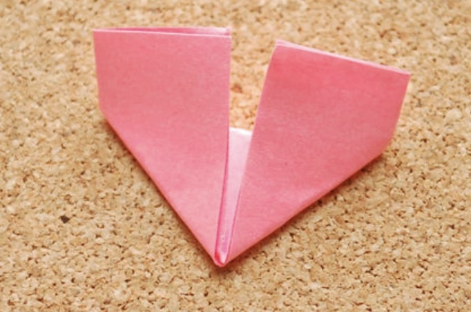
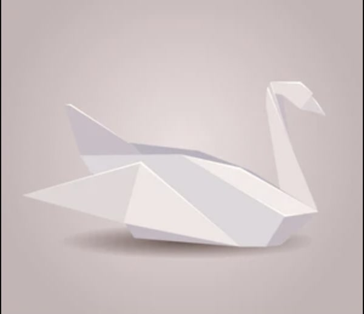
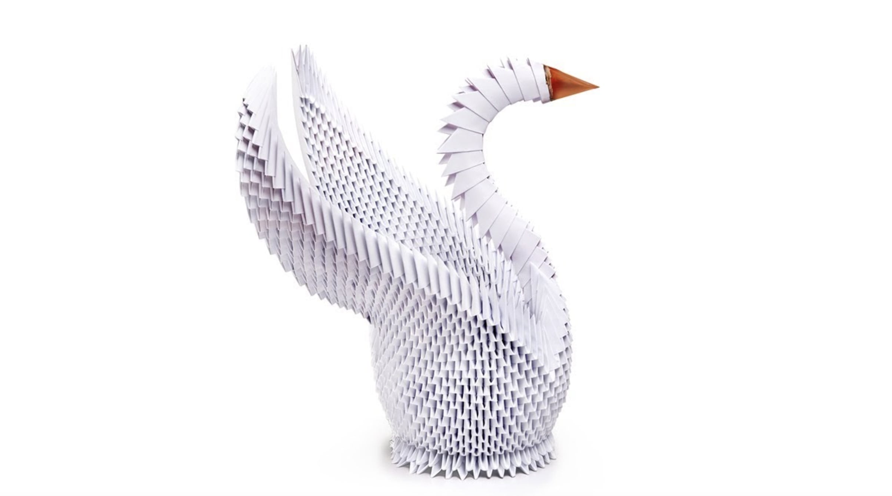

What is 3D origami
 3D origami, also known as Chinese origami to golden venture origami, is a type of paper craft that starts in a way somewhat similar to standard origami, but instead creates a three-dimensional (3D) model of an object through the use of connected paper triangles. 3D origami begins with the creation of numerous small paper triangles, which are then used to create the actual sculpture. These triangles are created using a relatively small strip of paper that is folded in a particular way to create a triangular form with two “tabs” and two “pockets” on opposite sides of the triangle. This allows each triangle to be inserted into another triangle, by inserting the tabs into the pockets, allowing them to be joined together.This is a fairly time-consuming art form, but the final pieces are more durable and can be displayed more easily than many 2D origami forms.
Origami VS 3D Origami
| Origami | 3D Origami |
|---|---|
| Origami in general is an art form in which an object or model is created using only paper that is folded into a variety of shapes.  | 3D origami, on the other hand, uses dozens or hundreds of small paper triangles, interlocking them to create 3D models that are much more elaborate and complex than those forms made through traditional origami.  |
History of 3D Origami
The origin of this art form is debatable, though it is typically linked to a Chinese source, rather than standard two-dimensional (2D) origami that has a Japanese background. This type of origami was first noticed in the US and some other areas when Chinese immigrants, illegally smuggled into the US on a ship named the Golden Venture, were detained for a period of time. During their detention in the US, they created numerous origami sculptures and gave them to those who helped them.